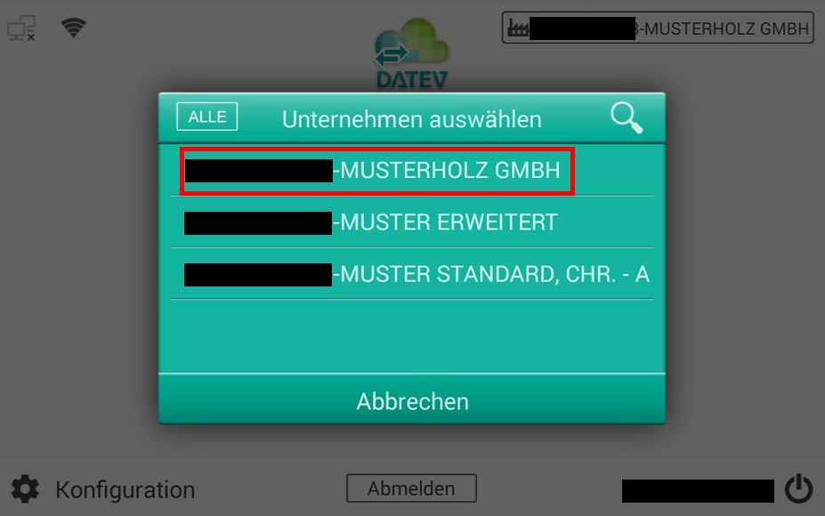
01
Unternehmen
Mandanten kommen live aus DATEV – inklusive Rechteverwaltung.
Ohne PC. Ohne Installation. Ohne Umwege. Der SCANDINAVIER holt Unternehmen und Belegtypen aus DATEV – und schickt Papier den kürzesten Weg ins Rechenzentrum.
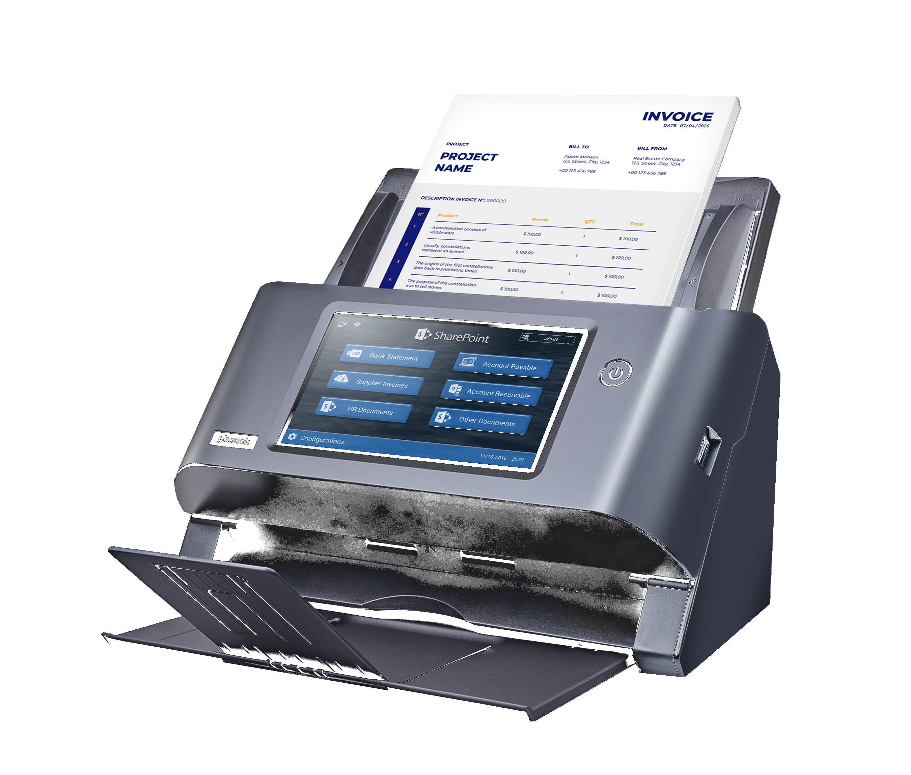
Aus Welzheim
DIN A 4. Scandinavier. Der Name ist ein Wortspiel – das Gerät ist ernst: ohne PC, ohne Installation, direkt zu DATEV.
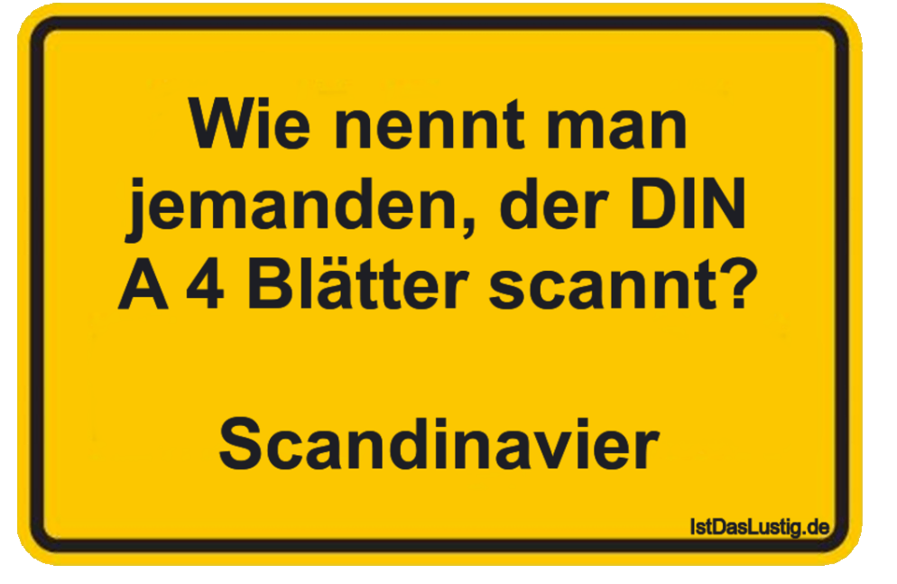
Produkt-Workflow
Unternehmen auswählen, Belegtyp wählen, scannen – die Übertragung nach DATEV startet direkt am Gerät. Kein Treiber. Kein PC. Keine Schulung.

Mandanten kommen live aus DATEV – inklusive Rechteverwaltung.
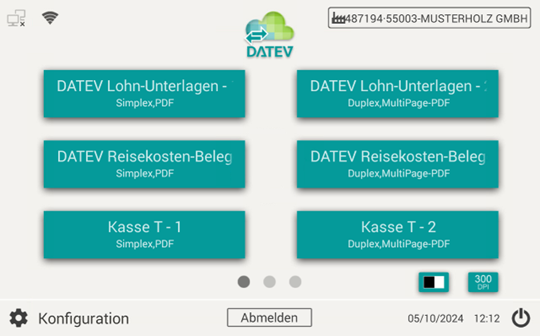
Kasse, Rechnung, Reisekosten: die Typen kommen aus DATEV.
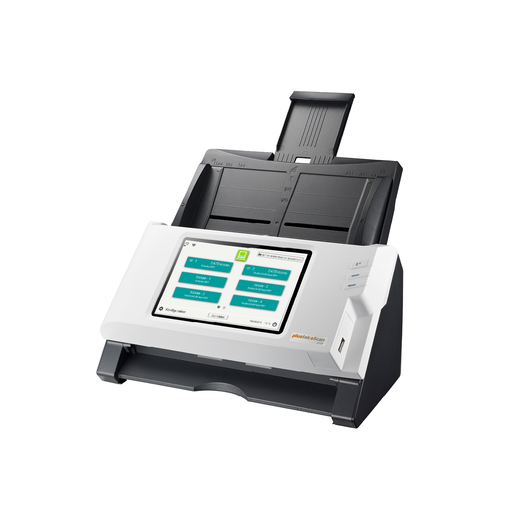
Beleg einlegen, Button tippen. Simplex oder Duplex, direkt am Gerät.
Über DATEVconnect online ins Archiv – ohne Umweg über den PC.
Zentrale Vorteile
Der SCANDINAVIER ist kein weiterer Scanner im Netzwerk. Er ist ein DATEV-Gerät, das ohne Software-Installation arbeitet.
Kein PC
Scannen, Vorschau, Versand – alles am 7-Zoll-Touchscreen. Ideal für Mandanten, Filialen und Arbeitsplätze ohne festen PC.

Über DATEVconnect online gehen Belege sicher ins DATEV-Rechenzentrum – in Unternehmen online, Meine Steuern oder die Digitale Personalakte.
Live-Kategorien: Buttons entstehen erst, wenn das Unternehmen gewählt ist. Umbenennungen passieren in DATEV, nicht am Scanner.
6.000
Der neue A355 schafft bis zu 6.000 Seiten am Tag. next und kanzlei gehen deutlich darüber hinaus.
LAN, WLAN oder Hotspot. Der Standort ist frei wählbar – Kanzlei, Mandant, Filiale oder Außendienst.
Zielgruppen
Der Mehrwert ist immer derselbe: Papier kommt an DATEV an, ohne dass IT anreisen muss.
01
Belege entstehen im Unternehmen, nicht in der Kanzlei. Der SCANDINAVIER steht dort, wo das Papier anfällt.
02
Weniger Vor-Ort-Termine, keine Treiber-Updates, volle Kontrolle über Mandanten und Belegtypen über DATEV-Rechte.
03
Niederlassungen ohne festen Arbeitsplatz-PC. Belege trotzdem täglich in DATEV – zentral steuerbar.
DATEV
Der SCANDINAVIER spricht DATEVconnect online. Unternehmen, Belegtypen und Rechte kommen aus DATEV – und die Belege gehen dorthin zurück.
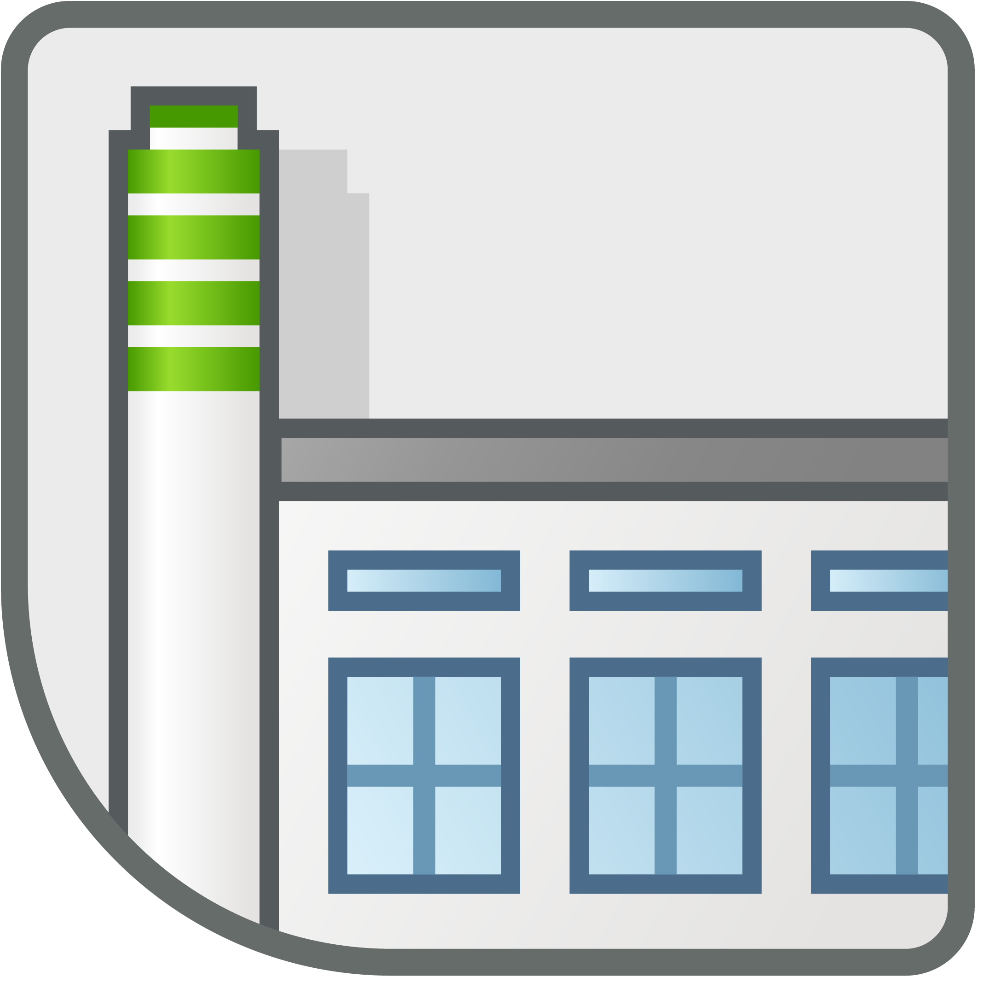
Belege und Rechnungen direkt und sicher ins DUO-Archiv. Die Unterlagen für die laufende Buchführung kommen digital an – ohne Papier, ohne Umwege.
Zur DATEV-Seite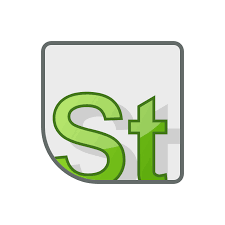
Dokumente und Belege bequem nach Meine Steuern übertragen. SmartLogin am Gerät, Synchronisation der Bestände, dann scannen.
Zur AnleitungArbeitsverträge, Krankmeldungen, Urlaubsanträge: personalbezogene Unterlagen sicher an die DATEV Digitale Personalakte übermitteln.
Zur AnleitungDokumente direkt an Ihr E-Mail-Konto senden.
Ablage ins Dateisystem oder auf den Server.
Scan auf den eingesteckten USB-Stick.
Übertragung an Ihren FTP- oder SFTP-Server.
Einsatz am Rechner per USB-Kabel.
Direkt in den webbasierten Freigabeprozess.
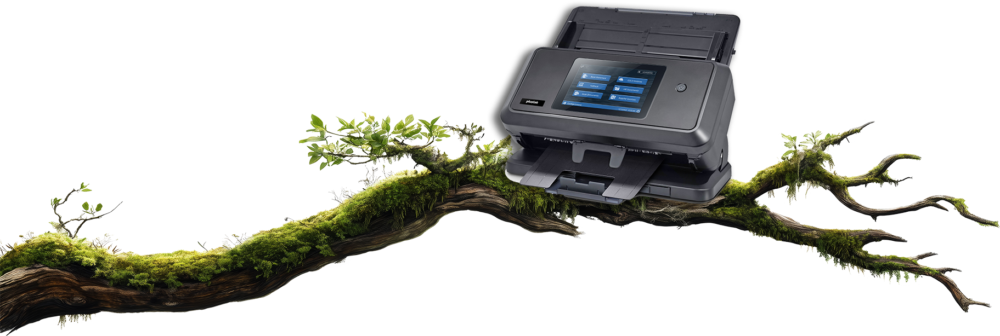
Produktmodelle
Unterschiede liegen in Tempo, Einzug, Volumen und Format – nicht in der DATEV-Logik. Die bleibt auf jedem SCANDINAVIER gleich.
A280 · Einstieg
A355 Pro · Standard
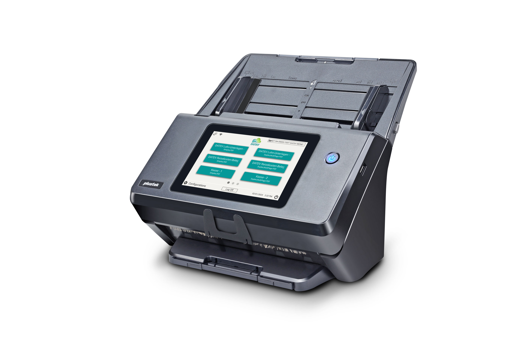
A450 · Volumen
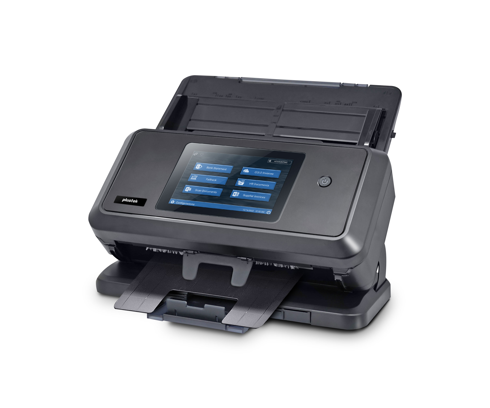
A650 · A3
Abmessungen
classic und comfort teilen dasselbe Gehäuse. next ist tiefer und höher. kanzlei ist das A3-Gerät – sichtbar größer.
189 mm
Stimmen
Kanzleien liefern den SCANDINAVIER zum Mandanten. Filialen scannen ohne PC. Der Support-Aufwand vorher entfällt.
„Der SCANDINAVIER ist die erste Wahl für unsere Mandanten. Wir liefern ihn direkt zum Mandanten aus und er funktioniert. Wir müssen nicht mehr vor Ort irgendwelche Software-Updates einspielen.“
„Für unsere Filialen haben wir schon lange solch ein einfaches Gerät ohne notwendigen PC gesucht.“
„Für jede Mandantengröße geeignet. Der bisherige Support- und Update-Aufwand bei unseren Mandanten entfällt komplett.“
Einrichtung
Sprache wählen, Netzwerk verbinden, DATEV SmartLogin, Bestände synchronisieren – dann der erste Scan. Die ausführlichen Screenshots bleiben im Support.

Einschalten, Netzwerk, dann DATEV Unternehmen online oder Meine Steuern wählen.

DATEV SmartLogin per QR-Code. mIDentity und SmartCard werden nicht benötigt.

Unternehmen online und optional Meine Steuern – Firmen und Belegtypen kommen von selbst.
Unternehmen wählen, Belegtyp tippen, Papier einlegen. Der erste Beleg ist in DATEV.
Anschlussmöglichkeiten
Der SCANDINAVIER steht dort, wo das Papier anfällt – nicht dort, wo zufällig ein PC steht.
Empfohlene Anschlussmethode – direkt am Router.
Flexibler Einsatz, wenn kein Kabel verfügbar ist.
Für weitere Scan-Aufgaben am Rechner.
Zum Beispiel für den Außendienst-Einsatz beim Mandanten.
Support als Argument
Schritt für Schritt, Remote und Ersatzteile – damit die Kanzlei nicht zur IT-Abteilung ihrer Mandanten wird.
Einrichtung, Scannen, WLAN, Rechte, SmartLogin: geführte Anleitungen mit echten Gerätebildern.
Jeder SCANDINAVIER kommt mit Fernzugriff. Die Kanzlei sieht dasselbe Display wie der Mandant.
Rollen, Pads, Netzteile, Maintenance Kits – bestellbar, ohne den Scanner neu zu erklären.
Firmware online. Release Notes im Support. Kein Software-Stand, den jemand vor Ort einspielen muss.
FAQs
Die ausführlichen Antworten, Garantieerweiterung und Kanzlei-Checkliste bleiben auf der FAQ-Seite.
Nein. Der SCANDINAVIER arbeitet standalone: Touchscreen, DATEV-Login und Upload sitzen im Gerät. Ein PC ist nur nötig, wenn Sie TWAIN über USB nutzen wollen.
classic und comfort teilen das kompakte A4-Gehäuse (318 × 170 × 189 mm). comfort ist der neue Alltagsscanner mit höherem Tagesvolumen. next ist tiefer und für hohe Stückzahlen. kanzlei (A650) scannt A3 und ist das größte Gerät.
DATEV Unternehmen online für den Mandanten, SmartLogin mit den passenden Rechten – dann kann der Mandant scannen. DATEV-Artikel 92222 wird für den SCANDINAVIER nicht benötigt.
Ja. TeamViewer Host ist integriert. Die Kanzlei sieht dasselbe Display wie der Mandant – ohne Anfahrt.
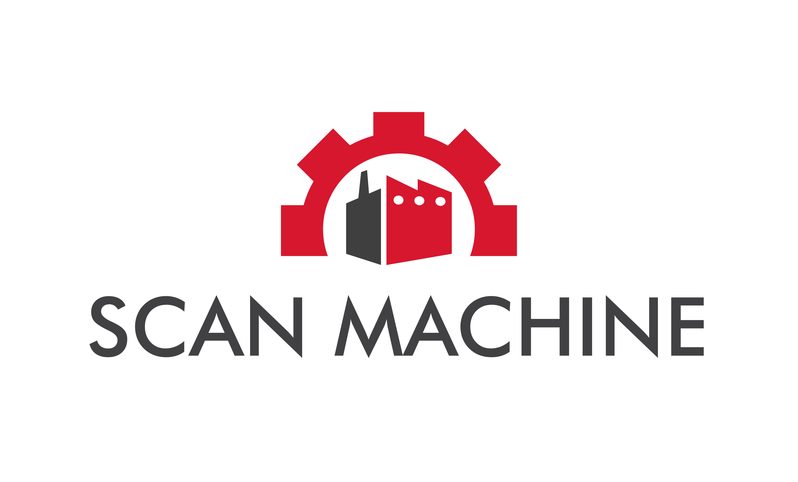
Schwesterprodukt
Für Pendelordner, Posteingang und hohe Scanvolumen intern in der Kanzlei – mit DATEV-Anbindung. Der SCANDINAVIER bleibt der Mandantenscanner ohne PC.
zur Homepage der SCAN MACHINEBereit?